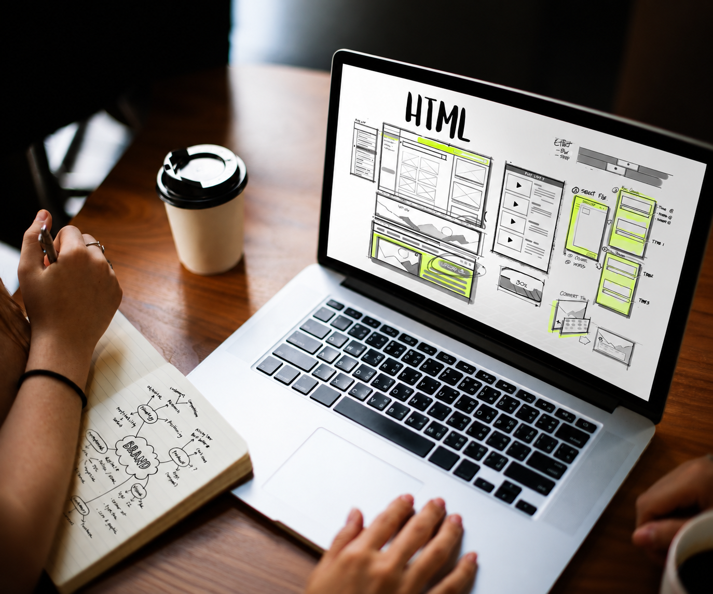

Sobre mí
Mi formación y experiencia están principalmente relacionadas con el diseño. Actualmente estudio la Tecnicatura en Desarrollo Web para ampliar mis conocimientos y acercarme al desarrollo de sitios web, incorporando también conocimientos de programación.
Mi interés por el desarrollo web
Me interesa especialmente el diseño de páginas web y la experiencia de usuario. Quiero aprender cómo combinar el diseño y el desarrollo para crear sitios claros, funcionales y fáciles de utilizar, con un enfoque principalmente orientado a la web.
Tecnologías y áreas de interés
- HTML5
- CSS
- Figma
- Bootstrap
- Sass
- Diseño Responsive
- UX/UI
- Accesibilidad Web
